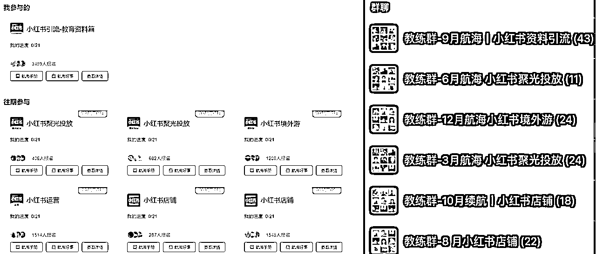
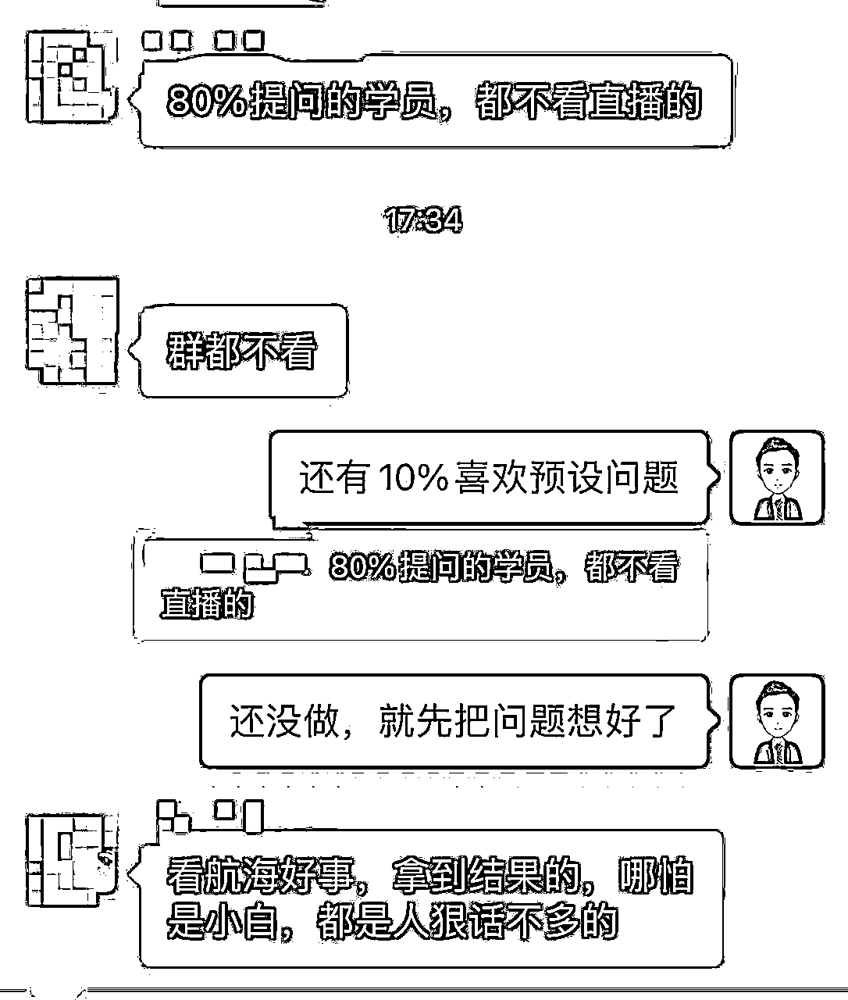

来源：https://p03a4vs9s2.feishu.cn/docx/IJnwdnaJioK7Bzxfnzdc6fktnCc
哈喽，我是叁斤，第七期加入生财，同年8月份第一次担任小红书相关项目的航海教练，之后就一直有跟小红书项目的航海

跟了这么多次航海，我发现圈友们做航海项目时有个规律：
开船前，个个船员都非常激动，恨不得马上开始实操
刚开船，破冰结束后的第一天，通常是群里举手提问最密集的时候
航行中，提问呈下降趋势，航行越久，提问越少，大部分人已经放弃项目了
……
特别在这次虚拟资料航海中，因为这条船的人数真的很多，问题也更明显，我们在教练群也讨论、总结了一些学员经常遇到的问

能理解大家在实操过程中发现项目不适合自己而放弃，但还有很多船员是放弃在起步阶段，最多的情况，是在刚开始的时候很积极提问，然后第二天、第三天就没消息了
我跟了 5 次航海，这几天总结了 5 个在航海过程中，最容易放弃航海的行为
如果船员们想要在航海中做出成绩，建议都看看
这次虚拟资料航海，一共报了快4000人，现在剩下3200左右，刚开船的那一两天，提问真的很密集
但是我们发现，大部分问题在手册都有很清晰的解答
比如：
怎么搭建资料库？
二手手机什么型号好？
怎么找爆款选题？
怎么引流？
……
这些问题在手册中都有很清晰的答案，还是选择在群里提问。虽然教练有答疑义务，但还是希望大家能把重点放到真正有价值的问题上
如果群里全是这种已经有答案的问题，那必然会导致教练回答得很疲惫，就会选择性忽略群聊问题，真正有价值的问题就得不到解答
或者真正有价值的问题，会被这些问题给覆盖过去
不看手册，纯靠教练在群内的答疑来推动项目，这类人大概率会在准备阶段就放弃项目，我现在回看群里，有几个提问怎么搭建资料库的，已经不在群里了
有相当一部分学员是高敏感体质，还没起号就担心：封号怎么办？连Wi-Fi了万一连带封号怎么办？万一资料有版权问题怎么办？
过于担忧，相当于自己给自己设置了阻碍，给了不去执行的理由，这种人真的很容易放弃项目
还有一类，特别喜欢预设问题，还没开始实操，就设想了一堆问题来提问
比如什么养号啊，网络啊，会不会被举报封号什么的，预设一堆问题等待教练解答，但是就是不实操
实际上，真正实操起来你会发现这些根本就不是问题
没养号就实操，一样能账号做好。实在没有多余网络，连接了Wi-Fi，也能完成起号，也不会限流
实际上，只要你实操，你会发现80%预想的问题都没有发生
其中教练@希平 提到，「看航海手册，拿到结果的，即使是小白，都是人恨话不多的」，我去看了下，还真是。很多真正在实操的都没有在群里提问，除非遇到真正的问题，比如确实限流、违规啥的
另一部还没开始运营就担心这担心那的，也都放弃在了起步阶段
有一部分的船员，对自己要求很高，第一篇比出成绩，就不想干了。或者自己预期的数据要求太高，第一篇没达到数据要求，就会失望
对于这个，我看到群里船员和教练讲到，生财的1块钱思维，真的很有帮助
新手做航海，先不要考虑一把赚个大的，先把1块钱赚了，把产品找好，先把低价资料卖出去，再去考虑后端高价产品
还有一些船员，是觉得自己没后端产品，光靠资料，每一份买个几块钱，赚的没意思……
这类人大概率都是眼高手低。
不要小看虚拟资料一份几块钱的收益，只要你把流程跑通，先把第一块钱赚了，放大后做一样可以做到月入几万几十万，很多教练都是这么做的。
但如果没有开头的第一块钱，后面几万几十万你咋赚？
再退一步说，你没有放大，只做到一个月几百块钱收益，真的很少，但你损失了啥呢？你还学到了运营技巧、引流技巧，同样的方法迁移到其他项目中，你起步就比别人更快
所以先干吧，既然报了航海，就先赚 1 块钱
之前的航海有很多人，一次性报了好几个项目，我记得有一个圈友在群里聊的时候说自己报了9个航海，我惊呆了，你咋做啊！
这次的航海优化后，我觉得非常棒，每个人只能报2个航海
其实 2 个也多了，真正有精力实操的，只有一个项目，做的事情一多，精力就会分散，更难做出结果
还有一些船员，在一个项目中也喜欢多方向进行，比如这次虚拟资料航海，理论上是可以附带网盘拉新项目一起做，所以有很多船员在资料库都没搭建好，就开始考虑网盘拉新要怎么做……
确实可以一起做，但要学跑步也得先学走路不是，先把虚拟资料路走顺了再考虑网盘拉新
我一直比较推崇最小阻力的推进项目，但是跟了几次航海我发现有很多圈友都喜欢做足准备再开始做事
比如，虚拟资料航海需要两三部手机，自己只有一部，就去买新设备，等设备到了再开始……
或者非得把资料库完全搭建好，后端找好，社群准备好再开始做账号……
其实做每一个项目，关键任务就那一点点，就拿虚拟资料说，最关键任务就是做笔记、引流，这个都没做好，搭建那么好的后端有什么用？
做笔记和引流，一部手机也能做呀，不是非要这么多账号同时运营
航海手册是每次开船前，生财团队和教练共同写了很久的，内容非常丰富且很贴合初学者的需求
有一部分学员会觉得手册内容太多，看不下去。这里需要说明一下：
航海手册是针对所有船员，教练在写的时候，是考虑大而全，考虑系统性的问题，要确保对所有船员都有用
但每个人的基础、条件和方向都可能不一样，所以在看的时候，可以挑重点看。比如 ，私域、矩阵、AI、投流、差异化资料这些用不上的话，先不看
把航海中最重要的步骤提炼出来，比如虚拟资料航海，最重要的步骤是：
重点步骤就这些，挑这三部分的内容看，其他的先不看。先做。
还有一类不看手册的，是对项目有基础了解，就是「我知道是怎么做的，不需要看」，然后很多问题就往群里抛
不要小看教练写手册的能力，也不要小看生财团队整理资料的能力，手册一定是能够帮助你从0～1跑通整个项目的，你知道的可能只是项目的大概流程，比如「买虚拟资料去小红书发帖卖」，但航海手册会写上很多细枝末节，怎么找资料、怎么规避版权资料、怎么做账号等等，都写的很细致
所以，一定一定要看手册，不管你是不是会这个项目，都要看！
看完手册后，就去干！遇到问题就来群里提问！不要预设问题！不要自己给自己设置阻碍！
你预设的问题，在实操过程中，80%都不会发生！
把关键步骤提炼出来，做就是了。所有项目，关键步骤就两三步，把它提炼出来，先开始
在运营过程中遇到问题，随时可以在群里提问，志愿者、领队和教练一直都会帮你解决问题
真的，别想那么多，先干！
前两天生财团队也打电话聊了下做教练的一些感受和建议
做航海项目的有非常多的小白，真的是对项目没有任何概念，这时让她看手册，大概率也有很多疑问
比如，小红书运营中的「一卡一机一号」问题，这个是风险规避手段，但如果船员总共就那么两三个号，不需要规避也没什么问题
这些可以整理个问答库之类的东西给他们看
除此之外，还可以收录一些常见问题，比如小红书系列航海，把往期所有项目的航海提问去重汇总起来，这样在下一次发起小红书相关航海，遇到简单的问题，可以让船员在问答库搜索答案
现在作业点评是1、3、5，每周三次，如果有问答库的情况下，可以增加点评的频率，加深教练与船员链接的频率。但是单个教练可能会因为时间问题做不到每天点评，可以分1、3、5和 2、4，不同的教练去点评
在带航海过程中确实发现有些船员会在日志上提问，但是没有在群里发言，所以有必要增加一些点评的频次
-
以上，祝大家在航海中都能赚到第 1 块钱